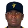
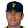
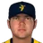
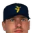
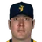
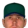

Franchise record book · FBL
Savannah Bananas
Seasons covered: 2002–2002. Only games played for this franchise count.
This club has no pre-2002 history in the export, so its record book is the 2002 season to date. Rate records need 3.1 PA or 1 inning per team game.
Home runs
| # | Player | Season | Team | Home runs |
|---|---|---|---|---|
| #1 | 2002 (FBL) |  Savannah Bananas Savannah Bananas | 8 | |
| #2 | 2002 (FBL) | Savannah Bananas | 6 | |
| #3 | 2002 (FBL) | Savannah Bananas | 6 | |
| #4 | 2002 (FBL) | Savannah Bananas | 6 | |
| #5 | 2002 (FBL) | Savannah Bananas | 6 | |
| #6 | 2002 (FBL) | Savannah Bananas | 5 | |
| #7 | 2002 (FBL) | Savannah Bananas | 4 | |
| #8 | 2002 (FBL) | Savannah Bananas | 3 | |
| #9 | Mitch Meluskey • | 2002 (FBL) | Savannah Bananas | 3 |
| #10 | 2002 (FBL) | Savannah Bananas | 2 |
Hits
| # | Player | Season | Team | Hits |
|---|---|---|---|---|
| #1 | 2002 (FBL) | Savannah Bananas | 51 | |
| #2 | 2002 (FBL) | Savannah Bananas | 49 | |
| #3 | 2002 (FBL) | Savannah Bananas | 48 | |
| #4 | 2002 (FBL) | Savannah Bananas | 45 | |
| #5 | 2002 (FBL) | Savannah Bananas | 44 | |
| #6 | 2002 (FBL) | Savannah Bananas | 37 | |
| #7 | 2002 (FBL) | Savannah Bananas | 37 | |
| #8 | 2002 (FBL) | Savannah Bananas | 35 | |
| #9 | 2002 (FBL) | Savannah Bananas | 35 | |
| #10 | Mitch Meluskey • | 2002 (FBL) | Savannah Bananas | 12 |
RBI
| # | Player | Season | Team | RBI |
|---|---|---|---|---|
| #1 | 2002 (FBL) | Savannah Bananas | 41 | |
| #2 | 2002 (FBL) | Savannah Bananas | 30 | |
| #3 | 2002 (FBL) | Savannah Bananas | 27 | |
| #4 | 2002 (FBL) | Savannah Bananas | 25 | |
| #5 | 2002 (FBL) | Savannah Bananas | 21 | |
| #6 | 2002 (FBL) | Savannah Bananas | 18 | |
| #7 | 2002 (FBL) | Savannah Bananas | 17 | |
| #8 | 2002 (FBL) | Savannah Bananas | 16 | |
| #9 | 2002 (FBL) | Savannah Bananas | 13 | |
| #10 | Mitch Meluskey • | 2002 (FBL) | Savannah Bananas | 7 |
Runs
| # | Player | Season | Team | Runs |
|---|---|---|---|---|
| #1 | 2002 (FBL) | Savannah Bananas | 34 | |
| #2 | 2002 (FBL) | Savannah Bananas | 34 | |
| #3 | 2002 (FBL) | Savannah Bananas | 27 | |
| #4 | 2002 (FBL) | Savannah Bananas | 25 | |
| #5 | 2002 (FBL) | Savannah Bananas | 21 | |
| #6 | 2002 (FBL) | Savannah Bananas | 20 | |
| #7 | 2002 (FBL) | Savannah Bananas | 17 | |
| #8 | 2002 (FBL) | Savannah Bananas | 14 | |
| #9 | 2002 (FBL) | Savannah Bananas | 12 | |
| #10 | 2002 (FBL) | Savannah Bananas | 6 |
Stolen bases
| # | Player | Season | Team | Stolen bases |
|---|---|---|---|---|
| #1 | 2002 (FBL) | Savannah Bananas | 9 | |
| #2 | 2002 (FBL) | Savannah Bananas | 4 | |
| #3 | 2002 (FBL) | Savannah Bananas | 4 | |
| #4 | 2002 (FBL) | Savannah Bananas | 3 | |
| #5 | 2002 (FBL) | Savannah Bananas | 2 | |
| #6 | 2002 (FBL) | Savannah Bananas | 2 | |
| #7 | 2002 (FBL) | Savannah Bananas | 2 | |
| #8 | 2002 (FBL) | Savannah Bananas | 1 | |
| #9 | 2002 (FBL) | Savannah Bananas | 1 | |
| #10 | 2002 (FBL) | Savannah Bananas | 1 |
Doubles
| # | Player | Season | Team | Doubles |
|---|---|---|---|---|
| #1 | 2002 (FBL) | Savannah Bananas | 17 | |
| #2 | 2002 (FBL) | Savannah Bananas | 17 | |
| #3 | 2002 (FBL) | Savannah Bananas | 10 | |
| #4 | 2002 (FBL) | Savannah Bananas | 9 | |
| #5 | 2002 (FBL) | Savannah Bananas | 8 | |
| #6 | 2002 (FBL) | Savannah Bananas | 6 | |
| #7 | 2002 (FBL) | Savannah Bananas | 6 | |
| #8 | 2002 (FBL) | Savannah Bananas | 5 | |
| #9 | 2002 (FBL) | Savannah Bananas | 3 | |
| #10 | 2002 (FBL) | Savannah Bananas | 2 |
Triples
| # | Player | Season | Team | Triples |
|---|---|---|---|---|
| #1 | 2002 (FBL) | Savannah Bananas | 2 | |
| #2 | 2002 (FBL) | Savannah Bananas | 2 | |
| #3 | 2002 (FBL) | Savannah Bananas | 1 | |
| #4 | 2002 (FBL) | Savannah Bananas | 1 | |
| #5 | 2002 (FBL) | Savannah Bananas | 1 | |
| #6 | 2002 (FBL) | Savannah Bananas | 1 | |
| #7 | Mitch Meluskey • | 2002 (FBL) | Savannah Bananas | 1 |
| #8 | 2002 (FBL) | Savannah Bananas | 1 | |
| #9 | 2002 (FBL) | Savannah Bananas | 1 | |
| #10 | 2002 (FBL) | Savannah Bananas | 0 |
Walks
| # | Player | Season | Team | Walks |
|---|---|---|---|---|
| #1 | 2002 (FBL) | Savannah Bananas | 25 | |
| #2 | 2002 (FBL) | Savannah Bananas | 22 | |
| #3 | 2002 (FBL) | Savannah Bananas | 15 | |
| #4 | 2002 (FBL) | Savannah Bananas | 13 | |
| #5 | 2002 (FBL) | Savannah Bananas | 12 | |
| #6 | 2002 (FBL) | Savannah Bananas | 12 | |
| #7 | Mitch Meluskey • | 2002 (FBL) | Savannah Bananas | 10 |
| #8 | 2002 (FBL) | Savannah Bananas | 9 | |
| #9 | 2002 (FBL) | Savannah Bananas | 7 | |
| #10 | 2002 (FBL) | Savannah Bananas | 6 |
Total bases
| # | Player | Season | Team | Total bases |
|---|---|---|---|---|
| #1 | 2002 (FBL) | Savannah Bananas | 84 | |
| #2 | 2002 (FBL) | Savannah Bananas | 82 | |
| #3 | 2002 (FBL) | Savannah Bananas | 79 | |
| #4 | 2002 (FBL) | Savannah Bananas | 74 | |
| #5 | 2002 (FBL) | Savannah Bananas | 70 | |
| #6 | 2002 (FBL) | Savannah Bananas | 63 | |
| #7 | 2002 (FBL) | Savannah Bananas | 60 | |
| #8 | 2002 (FBL) | Savannah Bananas | 54 | |
| #9 | 2002 (FBL) | Savannah Bananas | 54 | |
| #10 | Mitch Meluskey • | 2002 (FBL) | Savannah Bananas | 24 |
Batting average qualified
| # | Player | Season | Team | Batting average |
|---|---|---|---|---|
| #1 | 2002 (FBL) | Savannah Bananas | .327 | |
| #2 | 2002 (FBL) | Savannah Bananas | .306 | |
| #3 | 2002 (FBL) | Savannah Bananas | .306 | |
| #4 | 2002 (FBL) | Savannah Bananas | .302 | |
| #5 | 2002 (FBL) | Savannah Bananas | .296 | |
| #6 | 2002 (FBL) | Savannah Bananas | .285 | |
| #7 | 2002 (FBL) | Savannah Bananas | .274 | |
| #8 | 2002 (FBL) | Savannah Bananas | .262 | |
| #9 | 2002 (FBL) | Savannah Bananas | .259 |
On-base % qualified
| # | Player | Season | Team | On-base % |
|---|---|---|---|---|
| #1 | 2002 (FBL) | Savannah Bananas | .404 | |
| #2 | 2002 (FBL) | Savannah Bananas | .366 | |
| #3 | 2002 (FBL) | Savannah Bananas | .362 | |
| #4 | 2002 (FBL) | Savannah Bananas | .360 | |
| #5 | 2002 (FBL) | Savannah Bananas | .353 | |
| #6 | 2002 (FBL) | Savannah Bananas | .353 | |
| #7 | 2002 (FBL) | Savannah Bananas | .343 | |
| #8 | 2002 (FBL) | Savannah Bananas | .328 | |
| #9 | 2002 (FBL) | Savannah Bananas | .296 |
Slugging % qualified
| # | Player | Season | Team | Slugging % |
|---|---|---|---|---|
| #1 | 2002 (FBL) | Savannah Bananas | .538 | |
| #2 | 2002 (FBL) | Savannah Bananas | .516 | |
| #3 | 2002 (FBL) | Savannah Bananas | .494 | |
| #4 | 2002 (FBL) | Savannah Bananas | .476 | |
| #5 | 2002 (FBL) | Savannah Bananas | .467 | |
| #6 | 2002 (FBL) | Savannah Bananas | .444 | |
| #7 | 2002 (FBL) | Savannah Bananas | .440 | |
| #8 | 2002 (FBL) | Savannah Bananas | .439 | |
| #9 | 2002 (FBL) | Savannah Bananas | .432 |
OPS qualified
| # | Player | Season | Team | OPS |
|---|---|---|---|---|
| #1 | 2002 (FBL) | Savannah Bananas | .905 | |
| #2 | 2002 (FBL) | Savannah Bananas | .880 | |
| #3 | 2002 (FBL) | Savannah Bananas | .868 | |
| #4 | 2002 (FBL) | Savannah Bananas | .854 | |
| #5 | 2002 (FBL) | Savannah Bananas | .820 | |
| #6 | 2002 (FBL) | Savannah Bananas | .803 | |
| #7 | 2002 (FBL) | Savannah Bananas | .775 | |
| #8 | 2002 (FBL) | Savannah Bananas | .767 | |
| #9 | 2002 (FBL) | Savannah Bananas | .740 |
WAR (OOTP)
| # | Player | Season | Team | WAR (OOTP) |
|---|---|---|---|---|
| #1 | 2002 (FBL) | Savannah Bananas | 1.1 | |
| #2 | 2002 (FBL) | Savannah Bananas | 0.7 | |
| #3 | Mitch Meluskey • | 2002 (FBL) | Savannah Bananas | 0.5 |
| #4 | 2002 (FBL) | Savannah Bananas | 0.5 | |
| #5 | 2002 (FBL) | Savannah Bananas | 0.5 | |
| #6 | 2002 (FBL) | Savannah Bananas | 0.4 | |
| #7 | 2002 (FBL) | Savannah Bananas | 0.4 | |
| #8 | 2002 (FBL) | Savannah Bananas | 0.3 | |
| #9 | 2002 (FBL) | Savannah Bananas | 0.2 | |
| #10 | 2002 (FBL) | Savannah Bananas | 0.1 |
Wins
| # | Player | Season | Team | Wins |
|---|---|---|---|---|
| #1 | 2002 (FBL) | Savannah Bananas | 5 | |
| #2 | 2002 (FBL) | Savannah Bananas | 4 | |
| #3 | 2002 (FBL) | Savannah Bananas | 3 | |
| #4 |  Esteban Yan • | 2002 (FBL) | Savannah Bananas | 2 |
| #5 |  Felipe Lira • | 2002 (FBL) | Savannah Bananas | 2 |
| #6 |  Ryan Madson • | 2002 (FBL) | Savannah Bananas | 2 |
| #7 | John Rheinecker • | 2002 (FBL) | Savannah Bananas | 2 |
| #8 |  Steve Kline • | 2002 (FBL) | Savannah Bananas | 1 |
| #9 |  Robert Ramsay • | 2002 (FBL) | Savannah Bananas | 1 |
| #10 | 2002 (FBL) | Savannah Bananas | 0 |
Strikeouts
| # | Player | Season | Team | Strikeouts |
|---|---|---|---|---|
| #1 | 2002 (FBL) | Savannah Bananas | 54 | |
| #2 | 2002 (FBL) | Savannah Bananas | 43 | |
| #3 | Esteban Yan • | 2002 (FBL) | Savannah Bananas | 30 |
| #4 | Felipe Lira • | 2002 (FBL) | Savannah Bananas | 22 |
| #5 | 2002 (FBL) | Savannah Bananas | 21 | |
| #6 | John Rheinecker • | 2002 (FBL) | Savannah Bananas | 21 |
| #7 | Robert Ramsay • | 2002 (FBL) | Savannah Bananas | 18 |
| #8 | 2002 (FBL) | Savannah Bananas | 18 | |
| #9 | Ryan Madson • | 2002 (FBL) | Savannah Bananas | 15 |
| #10 | Steve Kline • | 2002 (FBL) | Savannah Bananas | 9 |
Saves
| # | Player | Season | Team | Saves |
|---|---|---|---|---|
| #1 | Steve Kline • | 2002 (FBL) | Savannah Bananas | 9 |
| #2 | Esteban Yan • | 2002 (FBL) | Savannah Bananas | 2 |
| #3 | 2002 (FBL) | Savannah Bananas | 1 | |
| #4 | 2002 (FBL) | Savannah Bananas | 1 | |
| #5 | Ryan Madson • | 2002 (FBL) | Savannah Bananas | 1 |
| #6 | 2002 (FBL) | Savannah Bananas | 0 | |
| #7 | 2002 (FBL) | Savannah Bananas | 0 | |
| #8 | 2002 (FBL) | Savannah Bananas | 0 | |
| #9 | Robert Ramsay • | 2002 (FBL) | Savannah Bananas | 0 |
| #10 | Felipe Lira • | 2002 (FBL) | Savannah Bananas | 0 |
Innings
| # | Player | Season | Team | Innings |
|---|---|---|---|---|
| #1 | 2002 (FBL) | Savannah Bananas | 54.2 | |
| #2 | 2002 (FBL) | Savannah Bananas | 48.0 | |
| #3 | John Rheinecker • | 2002 (FBL) | Savannah Bananas | 46.0 |
| #4 | Felipe Lira • | 2002 (FBL) | Savannah Bananas | 44.2 |
| #5 | Esteban Yan • | 2002 (FBL) | Savannah Bananas | 28.0 |
| #6 | Robert Ramsay • | 2002 (FBL) | Savannah Bananas | 26.1 |
| #7 | 2002 (FBL) | Savannah Bananas | 25.1 | |
| #8 | 2002 (FBL) | Savannah Bananas | 24.2 | |
| #9 | Ryan Madson • | 2002 (FBL) | Savannah Bananas | 18.0 |
| #10 | Steve Kline • | 2002 (FBL) | Savannah Bananas | 17.2 |
Complete games
| # | Player | Season | Team | Complete games |
|---|---|---|---|---|
| #1 | 2002 (FBL) | Savannah Bananas | 0 | |
| #2 | 2002 (FBL) | Savannah Bananas | 0 | |
| #3 | Steve Kline • | 2002 (FBL) | Savannah Bananas | 0 |
| #4 | 2002 (FBL) | Savannah Bananas | 0 | |
| #5 | Robert Ramsay • | 2002 (FBL) | Savannah Bananas | 0 |
| #6 | Esteban Yan • | 2002 (FBL) | Savannah Bananas | 0 |
| #7 | 2002 (FBL) | Savannah Bananas | 0 | |
| #8 | 2002 (FBL) | Savannah Bananas | 0 | |
| #9 | Felipe Lira • | 2002 (FBL) | Savannah Bananas | 0 |
| #10 |  Doug Creek • | 2002 (FBL) | Savannah Bananas | 0 |
Shutouts
| # | Player | Season | Team | Shutouts |
|---|---|---|---|---|
| #1 | 2002 (FBL) | Savannah Bananas | 0 | |
| #2 | 2002 (FBL) | Savannah Bananas | 0 | |
| #3 | Steve Kline • | 2002 (FBL) | Savannah Bananas | 0 |
| #4 | 2002 (FBL) | Savannah Bananas | 0 | |
| #5 | Robert Ramsay • | 2002 (FBL) | Savannah Bananas | 0 |
| #6 | Esteban Yan • | 2002 (FBL) | Savannah Bananas | 0 |
| #7 | 2002 (FBL) | Savannah Bananas | 0 | |
| #8 | 2002 (FBL) | Savannah Bananas | 0 | |
| #9 | Felipe Lira • | 2002 (FBL) | Savannah Bananas | 0 |
| #10 | Doug Creek • | 2002 (FBL) | Savannah Bananas | 0 |
ERA qualified
| # | Player | Season | Team | ERA |
|---|---|---|---|---|
| #1 | 2002 (FBL) | Savannah Bananas | 3.79 | |
| #2 | 2002 (FBL) | Savannah Bananas | 4.69 | |
| #3 | John Rheinecker • | 2002 (FBL) | Savannah Bananas | 4.89 |
| #4 | Felipe Lira • | 2002 (FBL) | Savannah Bananas | 5.24 |
WHIP qualified
| # | Player | Season | Team | WHIP |
|---|---|---|---|---|
| #1 | 2002 (FBL) | Savannah Bananas | 1.46 | |
| #2 | 2002 (FBL) | Savannah Bananas | 1.48 | |
| #3 | John Rheinecker • | 2002 (FBL) | Savannah Bananas | 1.52 |
| #4 | Felipe Lira • | 2002 (FBL) | Savannah Bananas | 1.54 |
K/9 qualified
| # | Player | Season | Team | K/9 |
|---|---|---|---|---|
| #1 | 2002 (FBL) | Savannah Bananas | 10.1 | |
| #2 | 2002 (FBL) | Savannah Bananas | 7.1 | |
| #3 | Felipe Lira • | 2002 (FBL) | Savannah Bananas | 4.4 |
| #4 | John Rheinecker • | 2002 (FBL) | Savannah Bananas | 4.1 |
WAR (OOTP)
| # | Player | Season | Team | WAR (OOTP) |
|---|---|---|---|---|
| #1 | 2002 (FBL) | Savannah Bananas | 1.0 | |
| #2 | 2002 (FBL) | Savannah Bananas | 0.9 | |
| #3 | 2002 (FBL) | Savannah Bananas | 0.6 | |
| #4 | Felipe Lira • | 2002 (FBL) | Savannah Bananas | 0.5 |
| #5 | Esteban Yan • | 2002 (FBL) | Savannah Bananas | 0.3 |
| #6 | 2002 (FBL) | Savannah Bananas | 0.2 | |
| #7 | Steve Kline • | 2002 (FBL) | Savannah Bananas | 0.1 |
| #8 | 2002 (FBL) | Savannah Bananas | 0.1 | |
| #9 | Ryan Madson • | 2002 (FBL) | Savannah Bananas | 0.0 |
| #10 | John Rheinecker • | 2002 (FBL) | Savannah Bananas | 0.0 |
Home runs
| # | Player | Years | Home runs |
|---|---|---|---|
| #1 | 1994–02 | 8 | |
| #2 | 1998–02 | 6 | |
| #3 | 2001–02 | 6 | |
| #4 | 1997–02 | 6 | |
| #5 | 1999–02 | 6 | |
| #6 | 2002–02 | 5 | |
| #7 | 2000–02 | 4 | |
| #8 | 2000–02 | 3 | |
| #9 | Mitch Meluskey • | 1998–02 | 3 |
| #10 | 1996–02 | 2 |
Hits
| # | Player | Years | Hits |
|---|---|---|---|
| #1 | 1994–02 | 51 | |
| #2 | 1997–02 | 49 | |
| #3 | 2002–02 | 48 | |
| #4 | 1996–02 | 45 | |
| #5 | 1999–02 | 44 | |
| #6 | 2001–02 | 37 | |
| #7 | 2000–02 | 37 | |
| #8 | 1998–02 | 35 | |
| #9 | 2000–02 | 35 | |
| #10 | Mitch Meluskey • | 1998–02 | 12 |
RBI
| # | Player | Years | RBI |
|---|---|---|---|
| #1 | 1994–02 | 41 | |
| #2 | 2002–02 | 30 | |
| #3 | 1997–02 | 27 | |
| #4 | 2001–02 | 25 | |
| #5 | 1996–02 | 21 | |
| #6 | 2000–02 | 18 | |
| #7 | 1998–02 | 17 | |
| #8 | 2000–02 | 16 | |
| #9 | 1999–02 | 13 | |
| #10 | Mitch Meluskey • | 1998–02 | 7 |
Runs
| # | Player | Years | Runs |
|---|---|---|---|
| #1 | 1996–02 | 34 | |
| #2 | 1999–02 | 34 | |
| #3 | 2002–02 | 27 | |
| #4 | 1997–02 | 25 | |
| #5 | 1994–02 | 21 | |
| #6 | 2000–02 | 20 | |
| #7 | 2001–02 | 17 | |
| #8 | 1998–02 | 14 | |
| #9 | 2000–02 | 12 | |
| #10 | 2002–02 | 6 |
Stolen bases
| # | Player | Years | Stolen bases |
|---|---|---|---|
| #1 | 1999–02 | 9 | |
| #2 | 2000–02 | 4 | |
| #3 | 2002–02 | 4 | |
| #4 | 1998–02 | 3 | |
| #5 | 2002–02 | 2 | |
| #6 | 1997–02 | 2 | |
| #7 | 2002–02 | 2 | |
| #8 | 2001–02 | 1 | |
| #9 | 1996–02 | 1 | |
| #10 | 1994–02 | 1 |
Doubles
| # | Player | Years | Doubles |
|---|---|---|---|
| #1 | 1996–02 | 17 | |
| #2 | 2002–02 | 17 | |
| #3 | 1997–02 | 10 | |
| #4 | 1994–02 | 9 | |
| #5 | 1999–02 | 8 | |
| #6 | 2001–02 | 6 | |
| #7 | 2000–02 | 6 | |
| #8 | 1998–02 | 5 | |
| #9 | 2000–02 | 3 | |
| #10 | 2002–02 | 2 |
Triples
| # | Player | Years | Triples |
|---|---|---|---|
| #1 | 2000–02 | 2 | |
| #2 | 1999–02 | 2 | |
| #3 | 1998–02 | 1 | |
| #4 | 2001–02 | 1 | |
| #5 | 1996–02 | 1 | |
| #6 | 2000–02 | 1 | |
| #7 | Mitch Meluskey • | 1998–02 | 1 |
| #8 | 1997–02 | 1 | |
| #9 | 2002–02 | 1 | |
| #10 | 2000–02 | 0 |
Walks
| # | Player | Years | Walks |
|---|---|---|---|
| #1 | 1999–02 | 25 | |
| #2 | 1996–02 | 22 | |
| #3 | 2001–02 | 15 | |
| #4 | 1997–02 | 13 | |
| #5 | 1994–02 | 12 | |
| #6 | 2002–02 | 12 | |
| #7 | Mitch Meluskey • | 1998–02 | 10 |
| #8 | 2000–02 | 9 | |
| #9 | 2000–02 | 7 | |
| #10 | 1998–02 | 6 |
Total bases
| # | Player | Years | Total bases |
|---|---|---|---|
| #1 | 1994–02 | 84 | |
| #2 | 2002–02 | 82 | |
| #3 | 1997–02 | 79 | |
| #4 | 1999–02 | 74 | |
| #5 | 1996–02 | 70 | |
| #6 | 2001–02 | 63 | |
| #7 | 1998–02 | 60 | |
| #8 | 2000–02 | 54 | |
| #9 | 2000–02 | 54 | |
| #10 | Mitch Meluskey • | 1998–02 | 24 |
Batting average min 2,000 PA
| # | Player | Years | Batting average |
|---|
On-base % min 2,000 PA
| # | Player | Years | On-base % |
|---|
Slugging % min 2,000 PA
| # | Player | Years | Slugging % |
|---|
OPS min 2,000 PA
| # | Player | Years | OPS |
|---|
WAR (OOTP)
| # | Player | Years | WAR (OOTP) |
|---|---|---|---|
| #1 | 1996–02 | 1.1 | |
| #2 | 2002–02 | 0.7 | |
| #3 | Mitch Meluskey • | 1998–02 | 0.5 |
| #4 | 2001–02 | 0.5 | |
| #5 | 2000–02 | 0.5 | |
| #6 | 1994–02 | 0.4 | |
| #7 | 2000–02 | 0.4 | |
| #8 | 1999–02 | 0.3 | |
| #9 | 2002–02 | 0.2 | |
| #10 | 1997–02 | 0.1 |
Wins
| # | Player | Years | Wins |
|---|---|---|---|
| #1 | 1995–02 | 5 | |
| #2 | 2000–02 | 4 | |
| #3 | 1994–02 | 3 | |
| #4 | Esteban Yan • | 1996–02 | 2 |
| #5 | Felipe Lira • | 1995–02 | 2 |
| #6 | Ryan Madson • | 2002–02 | 2 |
| #7 | John Rheinecker • | 2002–02 | 2 |
| #8 | Steve Kline • | 1997–02 | 1 |
| #9 | Robert Ramsay • | 1999–02 | 1 |
| #10 | 1997–02 | 0 |
Strikeouts
| # | Player | Years | Strikeouts |
|---|---|---|---|
| #1 | 1995–02 | 54 | |
| #2 | 2000–02 | 43 | |
| #3 | Esteban Yan • | 1996–02 | 30 |
| #4 | Felipe Lira • | 1995–02 | 22 |
| #5 | 1994–02 | 21 | |
| #6 | John Rheinecker • | 2002–02 | 21 |
| #7 | Robert Ramsay • | 1999–02 | 18 |
| #8 | 1992–02 | 18 | |
| #9 | Ryan Madson • | 2002–02 | 15 |
| #10 | Steve Kline • | 1997–02 | 9 |
Saves
| # | Player | Years | Saves |
|---|---|---|---|
| #1 | Steve Kline • | 1997–02 | 9 |
| #2 | Esteban Yan • | 1996–02 | 2 |
| #3 | 1994–02 | 1 | |
| #4 | 1992–02 | 1 | |
| #5 | Ryan Madson • | 2002–02 | 1 |
| #6 | 2000–02 | 0 | |
| #7 | 1997–02 | 0 | |
| #8 | 1995–02 | 0 | |
| #9 | Robert Ramsay • | 1999–02 | 0 |
| #10 | Felipe Lira • | 1995–02 | 0 |
Innings
| # | Player | Years | Innings |
|---|---|---|---|
| #1 | 2000–02 | 54.2 | |
| #2 | 1995–02 | 48.0 | |
| #3 | John Rheinecker • | 2002–02 | 46.0 |
| #4 | Felipe Lira • | 1995–02 | 44.2 |
| #5 | Esteban Yan • | 1996–02 | 28.0 |
| #6 | Robert Ramsay • | 1999–02 | 26.1 |
| #7 | 1992–02 | 25.1 | |
| #8 | 1994–02 | 24.2 | |
| #9 | Ryan Madson • | 2002–02 | 18.0 |
| #10 | Steve Kline • | 1997–02 | 17.2 |
Complete games
| # | Player | Years | Complete games |
|---|---|---|---|
| #1 | 2000–02 | 0 | |
| #2 | 1997–02 | 0 | |
| #3 | Steve Kline • | 1997–02 | 0 |
| #4 | 1995–02 | 0 | |
| #5 | Robert Ramsay • | 1999–02 | 0 |
| #6 | Esteban Yan • | 1996–02 | 0 |
| #7 | 1994–02 | 0 | |
| #8 | 1992–02 | 0 | |
| #9 | Felipe Lira • | 1995–02 | 0 |
| #10 | Doug Creek • | 1995–02 | 0 |
Shutouts
| # | Player | Years | Shutouts |
|---|---|---|---|
| #1 | 2000–02 | 0 | |
| #2 | 1997–02 | 0 | |
| #3 | Steve Kline • | 1997–02 | 0 |
| #4 | 1995–02 | 0 | |
| #5 | Robert Ramsay • | 1999–02 | 0 |
| #6 | Esteban Yan • | 1996–02 | 0 |
| #7 | 1994–02 | 0 | |
| #8 | 1992–02 | 0 | |
| #9 | Felipe Lira • | 1995–02 | 0 |
| #10 | Doug Creek • | 1995–02 | 0 |
ERA min 500 IP
| # | Player | Years | ERA |
|---|
WHIP min 500 IP
| # | Player | Years | WHIP |
|---|
K/9 min 500 IP
| # | Player | Years | K/9 |
|---|
WAR (OOTP)
| # | Player | Years | WAR (OOTP) |
|---|---|---|---|
| #1 | 1994–02 | 1.0 | |
| #2 | 1995–02 | 0.9 | |
| #3 | 2000–02 | 0.6 | |
| #4 | Felipe Lira • | 1995–02 | 0.5 |
| #5 | Esteban Yan • | 1996–02 | 0.3 |
| #6 | 1997–02 | 0.2 | |
| #7 | Steve Kline • | 1997–02 | 0.1 |
| #8 | 1992–02 | 0.1 | |
| #9 | Ryan Madson • | 2002–02 | 0.0 |
| #10 | John Rheinecker • | 2002–02 | 0.0 |